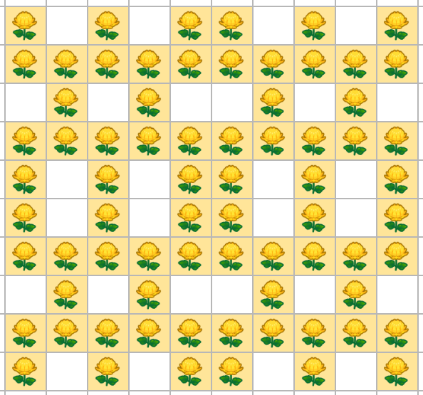
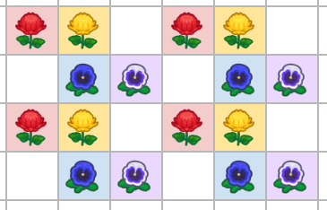
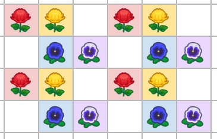
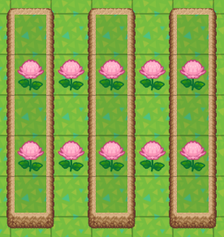
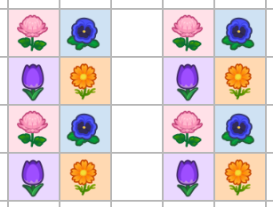
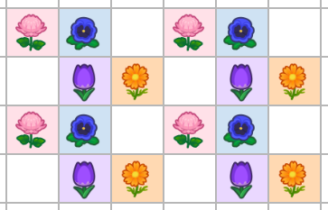
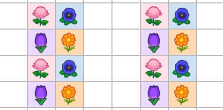

garden layouts

- Breeding is for when you want to cross genes of two flowers (to make a hybrid, etc.)
- Cloning is for when you already have the desired color, and you want to make more of the same.
- Testing is for when you need to check a flower's genotype. It is mainly used for Folklore/Paleh blue rose methods.
contents
All Flowers Layouts
- 12x12
- 39x21
Breeding Layouts [single-species, same parents]
- 2x2
- turtle
- super-turtle
- hexahole
Breeding Layouts [single-species, different parents]
- isolated pairs
- isolated pairs (cliff-assisted)
- diamond
Breeding Layouts [multi-species]
- dense isolated pairs
- dense diamonds
Cloning Layouts [single-species]
- isolated clones
- cliff cloning (single-species)
Cloning Layouts [multi-species]
- dense clone rows
- dense clone rows (double spaced)
- cliff cloning (multi-species)
Testing Layouts
- 2+1 testing
- 2+1 cliff testing
Everything Layouts
J_MASTER's 12x12 Breed Everything Layout
Get all colors in condensed 12x12 area!
BackwardsN's 39x21 Layout
Full 39x21
Visual guide with the steps
In-depth guide with all explanation of steps
{kind=link}
{kind=link}
Breeding Layouts [same parents]
2x2

turtle

super-turtle

hexahole

Breeding Layouts [different parents]
isolated pairs

isolated pairs (cliff-assisted)

diamond

Breeding Layouts [multi-species]
dense isolated pairs
 or

or

dense diamonds

Cloning Layouts [single-species]
isolated clones

cliff cloning (single-species)
you cannot tile the following layout vertically.

use the layout below if you want to tile vertically.

Cloning Layouts [multi-species]
dense clone rows
 or 
dense clone rows (double spaced)

cliff cloning (multi-species)

Testing Layouts
2+1 testing

2+1 cliff testing

Credits: (hi please yell at me to properly tag everyone and link everything im crying)
- Dataminers: Aeter (@aiterusawato), Paleh, Ninji (@_Ninji)
- Layouts: Chomp, Catobat, PCVXD, J_Master (@GigaRoboid), BackwardsN
- Flowchart: Ragzilla (ragzilla#0001)
- J_Master's Space-Efficient Layouts Guide
- Peach's Flower Layouts and Placements Guide
- Aeon's Flower Simulator
- Nubleh's Flower Planner